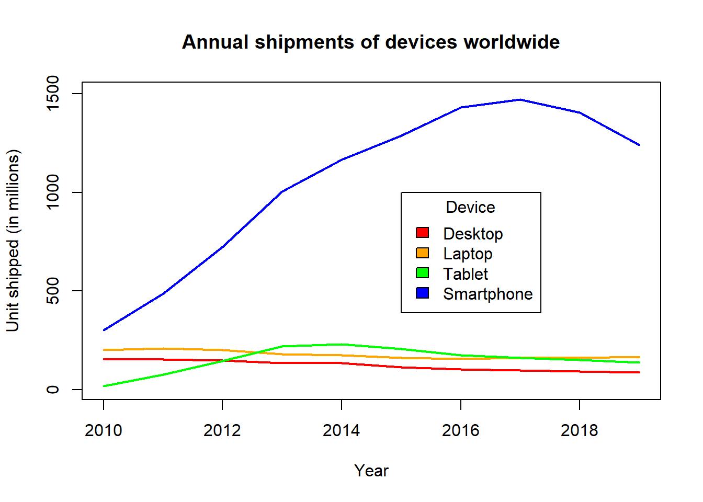

1.6 Hybrid businesses
Online shopping giant Amazon has recently merged with Target a traditional department store chain. Explain why this merger is a good idea and what benefits the customer gains from it.
1.6.1 Approaches to marketing online
- Search engine ads based on topics being searched
- Social media ads based on shared views and ideas
- Personal profiling to drive the user experience at a website based on specific interests and preferences expressed
1.6.2 The changing nature of business
Advances in technology have changed both the ability to produce product and the nature of markets. The internet and social media have exposed individuals to a wider range of products and vendors. This creates new desires and expectations in customers and increased competition among business. At the same time, social changes are impacting markets, particularly as youth explore new careers, lifestyles, technologies, and life goals.
Changing indicators of success in Singapore
The most common indicators of success mentioned in conversation with Singapore voters in 2000 was compare to the list compiled from conversations with Singaporen youth in 2018. (Singapore National Youth Council Youth Conversations 2019), (Tan 2019)
| Level | Traditional success indicators | Goals of Singapore Youth |
|---|---|---|
| 1 | Career / Work | Emotional well being |
| 2 | Finance / Money | Personal learning / Skill development |
| 3 | Studies / Degrees | Family |
| 4 | Family | Finance / Money |
| 5 | House / Belongings | Spirituality |
Top 10 Life Goals Important to Singapore Youth
| Goals | Percent |
|---|---|
| Home ownership | 70% |
| Strong family relationships | 70% |
| Learning / acquiring new skils | 62% |
| Successful career | 59% |
| Earn lots of money | 46% |
| Help less fortunate | 41% |
| Contribute to society | 40% |
| Get married | 36% |
| Have children | 35% |
| Good religious life | 31% |
Today’s businesses need to be as versatile and diverse as the customers and markets they serve. In the past, only businesses with a large customer base were about to benefit from economies of scale. However, online services have made it possible for businesses to support both mass distribution to millions of consumers while at the same time of catering to the diverse needs of individual customers that number in the millions.
Discussion: Impact of changes in life goals on business
How do you think changes in life goals of youth will impact the market place?
Based on these changes, which products would be expected to have the greatest increases or decreases in demand in the next 10 or 20 years?
What aspirations of Thai youth have changed in the last 10 years?
- What impact will these changes have on the Thai economy?
In 2019, it is estimated that over 56% of the world’s population has access to the internet. There are 26.6 billion devices and 4.39 billion people are connected to the internet. It is estimated that 3.48 billion social media users. Facebook alone has well over 2.36 billion users each month. Google answers 63,000 searches per second. This is creating unprecented levels of opportunity for marketing to huge markets world-wide. (Statista 2019)

References
Singapore National Youth Council Youth Conversations. 2019. “We Are More: Amplifying the Voices of Our Youth.” Singapore Ministry of Culture, Community,; Youth; https://youthconversations.wpcomstaging.com/wp-content/uploads/2019/03/NYC-Youth-Conversations-Publication-2019.pdf.
Statista. 2019. “Number of Internet Users Worldwide 2005-2018.” https://www.statista.com/statistics/273018/number-of-internet-users-worldwide.
Tan, Alanna. 2019. “How Millenials in Singapore Define Success.” Vulcan Post.